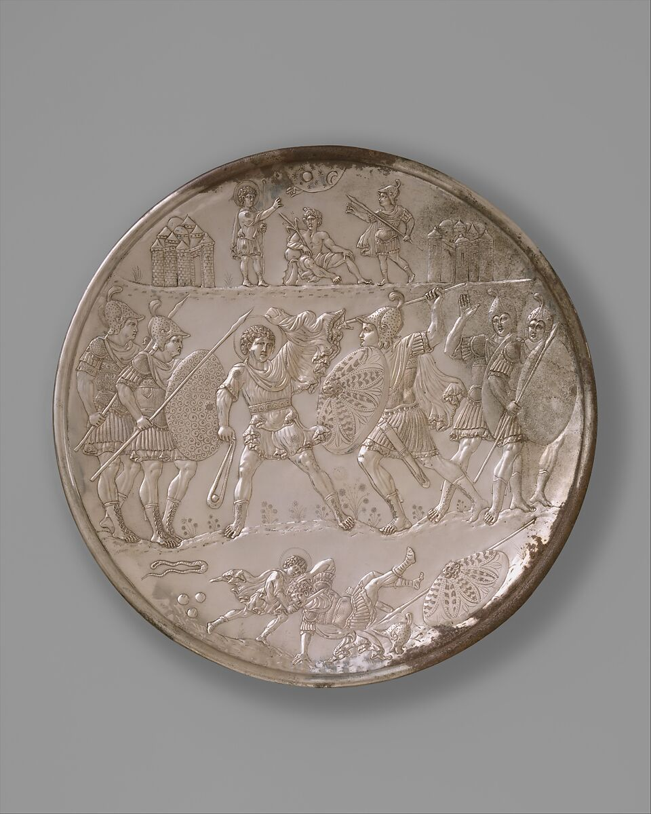
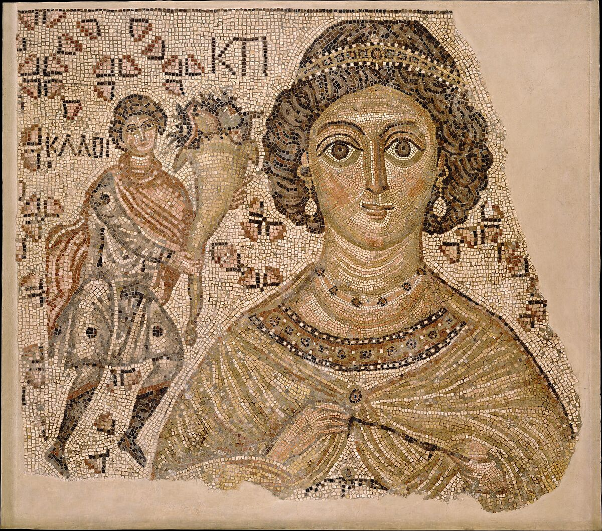
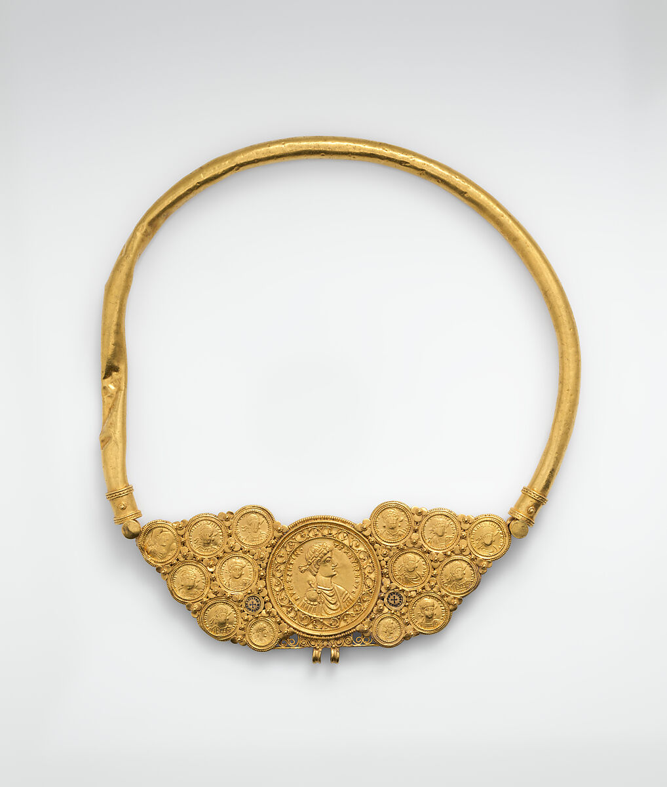
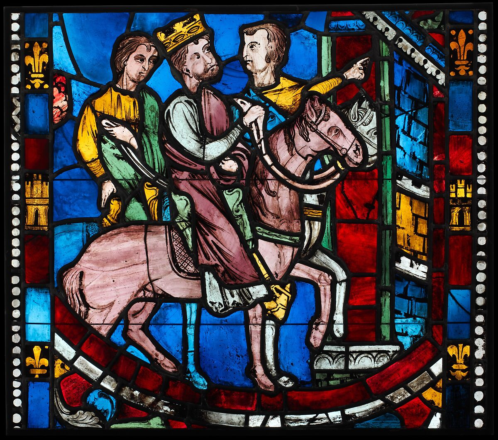
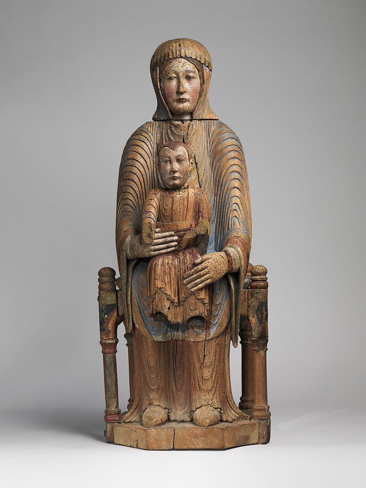
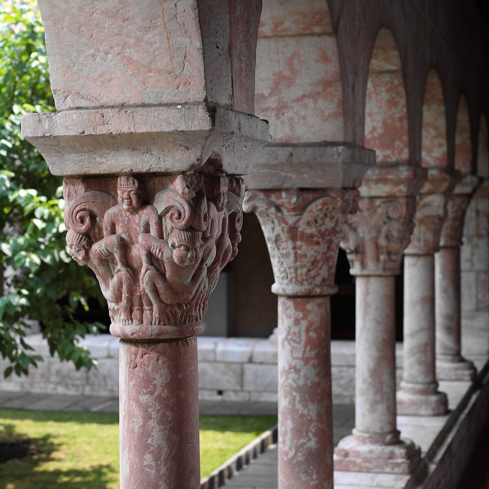
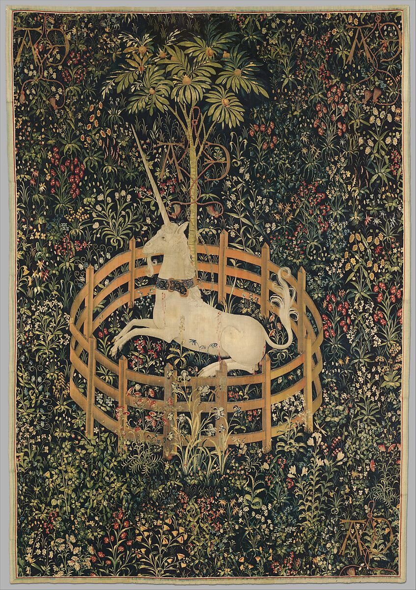
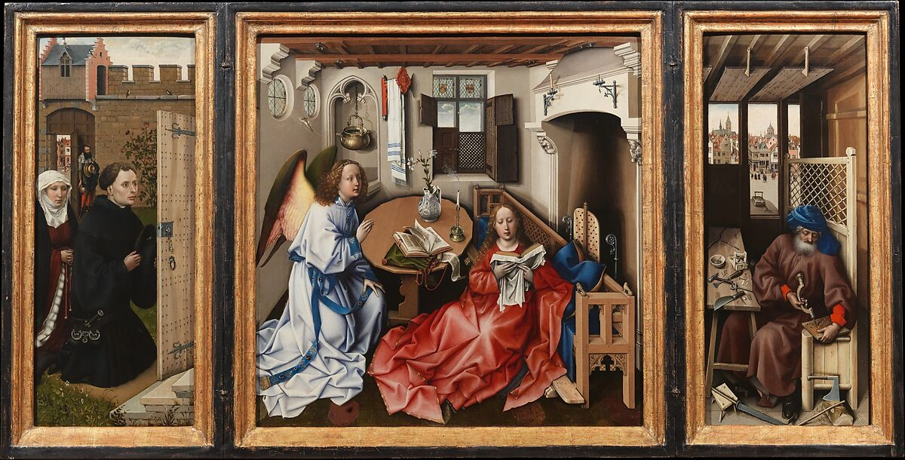
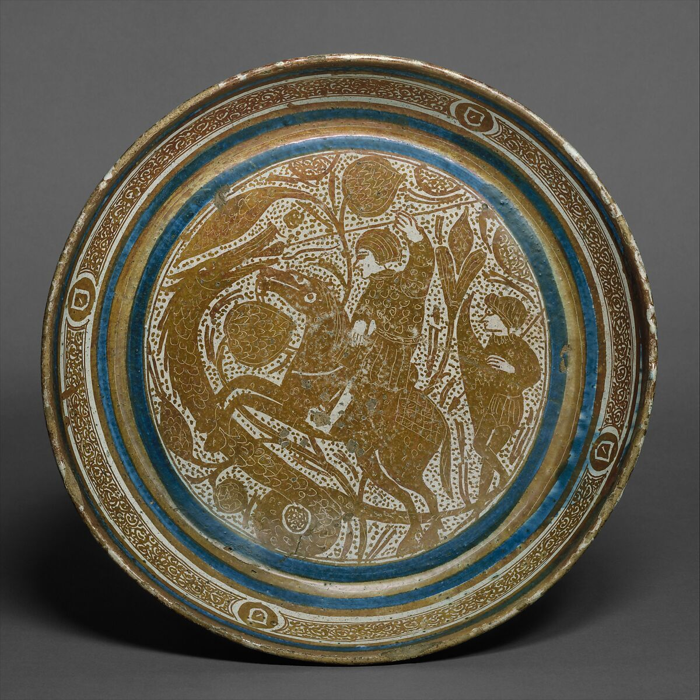

The Medieval Period
Early Medieval (5th-10th Century CE)
Early Medieval Period follows the fall of the Western Roman Empire, and is a time of frequent political unrest and warefare. This unsteadiness is reflected in the art through themes of combat, references to political leaders, a growing connection to religion, and visual storytelling. During this time, there was a lack of reading and writing skills among common people. Art was a way to convey messages, tell stories and teach the masses through strong uses of symbolism.
title

Plate with the Battle of David and Goliath

Fragment of a Floor Mosaic with a Personification of Ktisis

Pectoral with Coins and Pseudo-Medallion
High Medieval (1000-1250 CE)
The High Medieval Period was a time in European history that began after Emperor Otto I’s defeat of the Hungarians at Lechfeld in 955. This began a period of some internal stability, which lacked before. People began to develop more of a 'national' identity that differed from their religious identity. They wre able to grow in strength and proudly present themselves as conquerers and adventurers. The Holy Crusades took place during this time, as well as the rise of feudalism. As a result, we will see themes like religions and secular subject matter in High Medieval Art. This period is often characterized as the epitome of Medieval Art.
title

Theodosius Arrives at Ephesus, from a Scene from the Legend of the Seven Sleepers of Ephesus

Virgin and Child in Majesty

Cuxa Cloister
Late Medieval (1300-1500 CE)
In the Late Medieval period, we will start to see evidence of early modern world; this is the precursor to the Renaissance. Constantine ends Persecution of Christianity and spreads the religion by building basilicas to bring masses of people together. Other significant events during the Late Medieval Period include famine, disease, and the Black Death (1346-1353). We will start to see more naturalistic depictions of the human form.
title

The Unicorn Rests in a Garden (from the Unicorn Tapestries)

Annunciation Triptych (Merode Altarpiece)

Bowl with a Horseman Spearing a Serpent